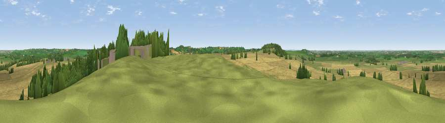

Viewpoint near Flecknoe
#18027 in England · top 18% of its area beats it · near FlecknoeWhere it is
The exact computed spot (SP 50975 63425). Click the marker for map links.
The view, rendered

A 360° render of this exact spot computed from the terrain model, tree cover and land cover — summer colours, afternoon light, calibrated against photographs of famous viewpoints. Real trees, hedges and buildings will differ in detail.
The panorama
Grey silhouette: terrain skyline in each direction (720 bearings, Earth curvature and refraction included). Dashed green: skyline with trees (+15 m) and buildings (+8 m) as obstacles. Blue strip: how far the ground is visible on each bearing.
Where the view opens
Wedge length = distance to the farthest visible ground on that bearing (vegetation-aware). Rings at 10, 25 and 50 km.
What fills the view
66% cropland · 25% grassland · 7% woodland · 1% built-up
Angular shares of the visible panorama (visual magnitude), not map area. Landscape diversity 0.37 (0–1 Shannon).
Key numbers
More beautiful places nearby
The staircase of upgrades: each row has a higher view potential than everything closer. Driving times are estimates from straight-line distance, calibrated against real road routing — check an actual route before setting out.
| Place | Direction | Drive | Score |
|---|---|---|---|
| Viewpoint near Lower Shuckburgh | SW · 2 km | ~5 min | 59.5 |
| Viewpoint near Lower Shuckburgh | SW · 2 km | ~6 min | 61.6 |
| Big Hill - Staverton Clump | ESE · 5 km | ~10 min | 68.4 |
| Viewpoint near Northend | SW · 16 km | ~28 min | 69.7 |
| Viewpoint near Northend | SW · 16 km | ~29 min | 70.3 |
| Viewpoint near Radway | SW · 20 km | ~33 min | 71.7 |
| Viewpoint near Ilmington | SW · 37 km | ~55 min | 72.6 |
| Viewpoint near Meon Vale | WSW · 38 km | ~57 min | 77.0 |
52.26663, -1.25446 · source: screening · position refined by local search. Computed location — check access rights before visiting.